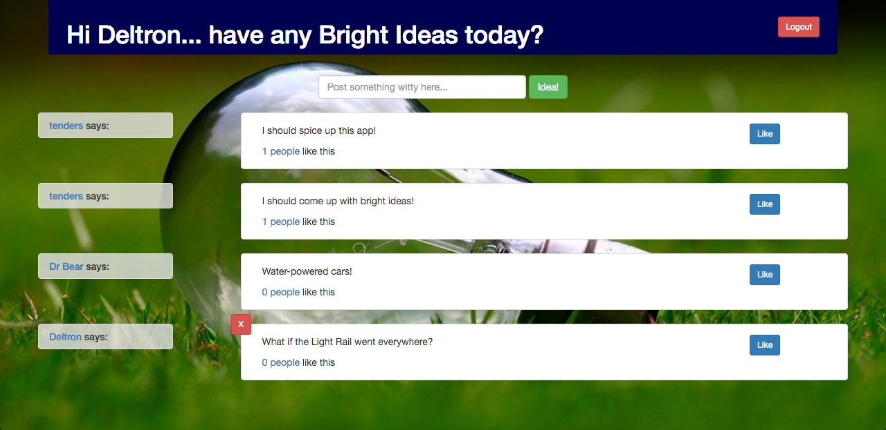

TODD ENDERS
“Intellectual growth should commence at birth and cease only at death.”
- Albert Einstein
ABOUT ME
Einstein had it right and I subscribe to his thinking that we need to learn for life. Not only do I like to learn for life, but I also find sharing what I know to be gratifying as well, in tech and in life. Tech though, hasn't always been my labor of love.
My coding career started out rough. I got in over my head with computer science courses, namely Java. It knocked me down a peg or two from my usual success and as a result, I put coding down and started with atmospheric science. It was a great choice, but eventually I wanted to code again.
Ever since 2014, I've been back in the coding mindspace and I am over-the-moon about my choice to pick it up again. I've had a deeper appreciation for the code I used to struggle with and I've been exposed to many technologies and ideas. It's hard for me to pin down my favorites, but I definitely have a soft spot for the LAMP stack, which I cut my teeth on, as well as Ruby's 'do everything for you' mentality.
Outside of the coding realm, you can most likely find me brewing a batch of beer, watching sports, at a concert, or fitting a video game in.
I've shared some of my projects that I built either as a student at Coding Dojo or freelance below.
PROJECTS
Bright Ideas
Pokeshop
HISTORY
CODING DOJO
Employed January 2016 - Present
Bootcamp Leader - Online Instruction
I teach web development principles to upwards of 40 online students wishing to jumpstart their careers over a course of several months. It's been very rewarding getting students to the finish line and into new jobs. Having an ever-growing breadth of knowledge is a necessity for this position.
CODING DOJO
Attended: Sept 2015 - Dec 2015
Graduated Bootcamp with Triple Black Belt in LAMP, MEAN, and Ruby on Rails stacks.
Black Belt achievement consisted of recreating a wireframe with most CRUD operations involved in a 4.5 hour timeframe along with AWS deployment.
OXFORD BROOKES UNIVERSITY
Attended: 2014 - 2015
Graduated with an MSc with Honors in Computing
This program taught me about the software lifecycle, networking, relational databases, Java-based OOP, and front-end languages, but the highlight was my dissertation, where I compared the D3 Javascript library against the Google Maps API when trying to visualize Landsat-8 surface temperatures for the Oxford area.
EARTH NETWORKS
Employed: 2007 - 2014
Meteorological Field Technician
Deployed and maintained a network of 100+ weather instruments in the Puget Sound region as well as traveled internationally.
UNIV. OF WASHINGTON
Attended: 2002 - 2006
Graduated with a Bachelors in Atmospheric Science
Much of my studying revolved around atmospheric motions, chemistry, and forecasting.
LEADERSHIP
Online Instructor
This position requires leading a numerous amount of online students through a month of classes at a time.
Having to lead a cohort of sometimes 20+ students has been challenging at times, however, always fulfilling in the end. I strive to give
CODING DOJO
Online TA Lead
This role was created ad-hoc to address the growing concern for coverage for online students.
Online TAs, typically remotely-vetted, are under my guidance for how to handle online student engagement as well as reporting issues. I've overseen reshaping of TA responsibilities to work more closely with a lead instructor.
CODING DOJO
Backbone Curriculum Development
There was a need for BackboneJS curriculm to be built as part of a front-end frameworks course.
Over the span of several months, on top of leading online cohorts, I developed a set of text, videos, and assignments for students to learn the basics of BackboneJS.
CODING DOJO
Student Representative for MSc in Computing
There was a volunteer opportunity to represent the MSc in Computing cohort.
I represented my classmates in student/staff meetings to discuss opportunities for curriculum, grading, and general feedback on the course.
OXFORD BROOKES UNIVERSITY
Assistant Coach of American Football
There was a volunteer opportunity to help the American football team.
I had a blast working with British coaches to help coach football fundamentals to college-aged students. I was in charge of defensive backs, a position I never played myself but was able to coach them up to execute at a high level, have fun and appreciate the game.
OXFORD BROOKES PANTHERS
CONTACT ME
- TODD ENDERS
-
 todd@toddenders.com
todd@toddenders.com
-
 253-604-8250
253-604-8250
-